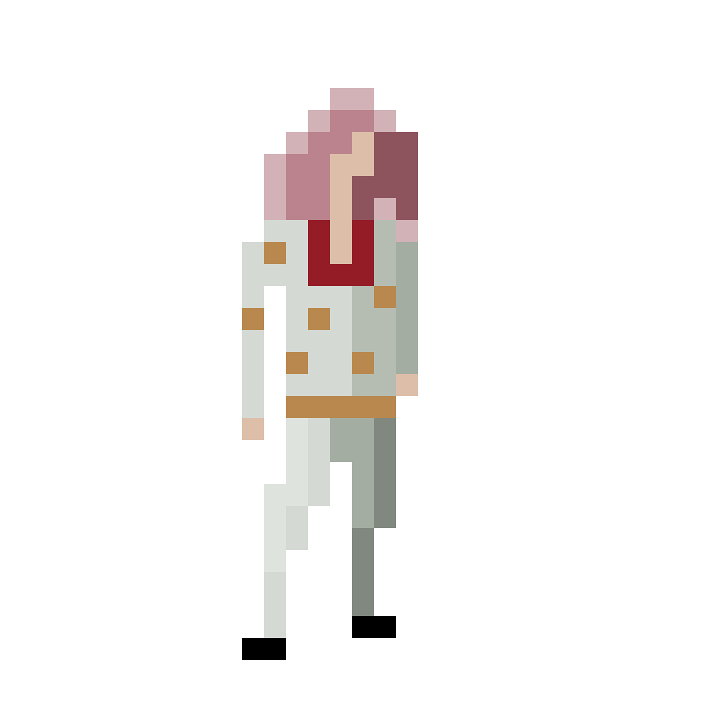

THE UNIVERSES
Since 2016, Marvel Studios has released so many movies and shows set in the multiverse that it has become an overrated trope. What sets EEAAO apart is it treats the multiverse concept more seriously.Within the Marvel Cinematic Universe, the multiverse concept has been repeatedly used to bring together unlikely characters like having different Spidermen or bringing Thor into Hulk’s world. Daniel Kwan told The Ringer, “The frustrating thing about them [multiverse narratives] is that no one is willing to go to the logical conclusion, which is infinity. If every single choice branches off into another universe, there should be an infinite number of universes, which means narrative doesn’t matter; choices don’t matter. Why should you care at all?”
Everything Everywhere All at Once challenges the multiverse to be a philosophical issue. The choices that Evelyn makes in her multiverse journey significantly raise the emotional stakes since her relationships with everyone were already rocky to begin with. If you were confronted with the multiverse, wouldn’t you have an existential crisis?
 HOW
TO INTERACT
HOW
TO INTERACT
This Sankey diagram visualizes which of the many universes show up along the chronological order of the film’s 15-beat structure. Hover over or click on each flow to see how many times each universe appears within each beat.